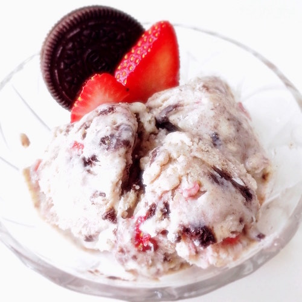
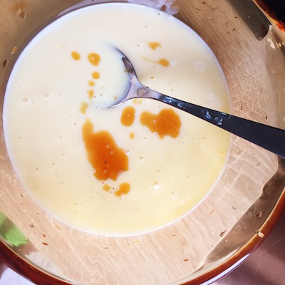
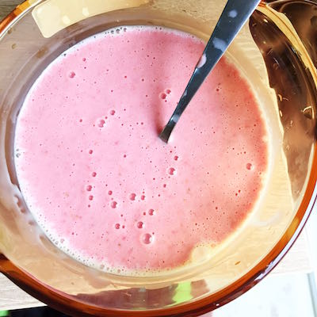
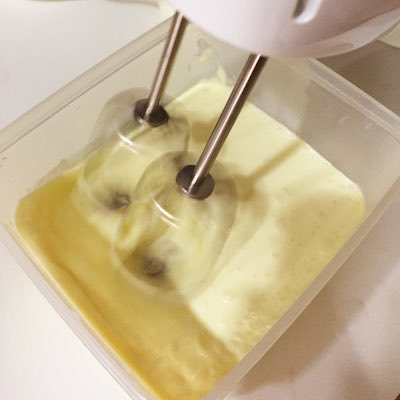
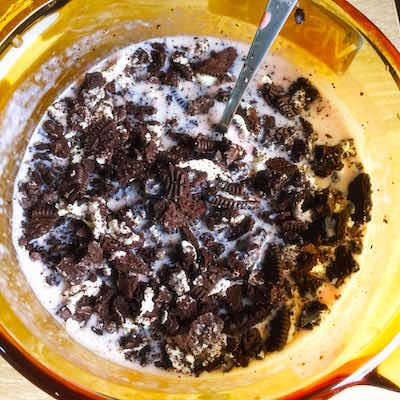
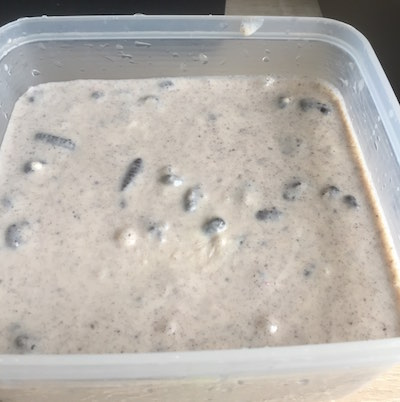

Ingredients
- 200ml of whipping cream
- 300ml sweetened condensed milk
- 10 medium size strawberries
- 8 Oreo Cookies (Crushed into small pieces)
- 1 tsp of vanilla
Description
- Make the strawberry puree with 6 medium size strawberries and chill.
- Take the rest of strawberries and cut into small pieces.
Pour condensed milk into a bowl and add 1 tsp of vanilla essence. Then add the strawberry puree and mix well.  
In a separate bowl beat whipping cream with a hand mixer. 
Then mix whipping cream with condensed milk mixture while adding strawberry pieces and Oreo crumbs. 
Finally put the mixture into plastic container and refrigerate for 6 hours before taste. 
Sponsored